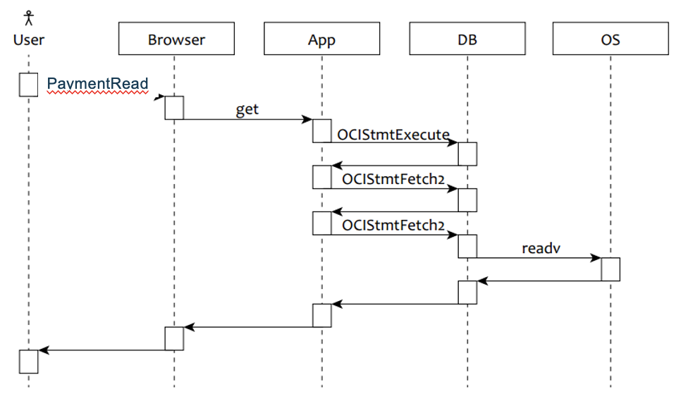

An introduction to performance
Created by Lasse Jenssen
Sources
What do we mean by performance?
We mean ...
Response Time and Throughput
Response Time
The time it takes to execute a task.
Throughput
The number of tasks executed in a period of time.
(Task = A business-oriented unit of work)
Response Time = Time / Tasks
Throughput = Tasks / Time
Demo: A Google search on the word "performance".
Response Time versus Throughput
"Throughput and response time
have a generally reciprocal type of relationship, but not exactly.
The real relationship is subtly more complex."
Cary Millsap
Example:
A benchmark shows that your system can handle
1000 tasks per second.
Question:
What, then, will be the users average response time?Response Time versus Throughput
"You cannot derive response time exclusively from a throughput measurement, however; you have to measure it separately."
Cary Millsap
Example:
You are asked to develop a feature which handle
100-tasks per second on a single CPU-computer.
Question:
You finish the code, and find that the new task executes in 1 ms.Response Time versus Throughput
"You cannot derive throughput exclusively from a response time measurement. You have to measure it separately."
Cary Millsap
When we build a cabin up in the mountains,
we need to know how much snow the roof need to carry.
When we develop a feature, we need to know
the minimum performance requirements.
When we develop a feature, we need to know
the minimum performance requirements.
Service Level Agreement (SLA)
Service Level Agreement (SLA)
Business Analysis -> Business Requirements -> SLA
A SLA should cover requirements towards ...
These are
Non-Functional Requirements (NFR)
If project fails, ignoring the non-functional requirements are most often the cause.
And when they fail on these requirements, they fail BIG.
Non-Functional Requirements (NFR)
is not only about performance requirements.
Why
is non-functional requirements so hard to fullfill?
Why
is performance requirements so hard to fullfill?
Human Factor
When do we feel the pain?
Design -> Development -> Test -> Production -> Future issues
Measuring Response Times
"Our users feel the variance, not the mean."
Cary Millsap
Two lists of response times (with avarage 1 sec)
| List1 | List2 | |
|---|---|---|
| 1 | .924 | .796 |
| 2 | .928 | .798 |
| 3 | .954 | .802 |
| 4 | .957 | .823 |
| 5 | .961 | .919 |
| 6 | .965 | .977 |
| 7 | .972 | 1.076 |
| 8 | .979 | 1.216 |
| 9 | .987 | 1.273 |
| 10 | 1.373 | 1.320 |
Alternative 1: All requests < 1 sec (not good)
Alternative 2: Average < 1 sec (not good)
We need a better alternative for how to specify requirements.
Alternative 3: 90th percentile < 1 sec
(read: < 1 sec for 90% of the executions)
Alternative 4: 90th percentile < 1 sec, 99th percentile < 5 sec
(read: < 1 sec for 90% of the executions, < 5 sec for 99% of the executions)
Response Time equals
Service Time (CPU) + Wait Time
Instrumentation
"Performance is a feature." Cary Millsap
Instrumentation
When issues occures, it is important to fix them ASAP.
Instrumentation is supposed to give us insight into what is going on in our application.
Valuable both during development (debug) and testing, and in production.
Instrumentation
Might include:
Distributed Systems
We want to follow executions through distributed systems. How?
We need to introduce a Experience ID.
The Experience ID needs to be propagated to every service in use.
Then we need a way to collect all data for a given Experience.
Profiling
Use collected data to create a profile showing time distribution.
| Function Call | R (sec) | Calls | |
|---|---|---|---|
| 1 | DB:fetch() | .7963 | 1013 |
| 2 | APP:await_db_netio() | .3384 | 1013 |
| 3 | DB:execute() | .1932 | 89 |
| 4 | DB:bind() | .1032 | 89 |
| 5 | Other | .0539 | 214 |
| 6 | APP:render_graph() | .0493 | 7 |
| 7 | APP:tabularize() | .0232 | 4 |
| 8 | APP:read() | .0091 | 2 |
Amdahl's Law
"The overall performance improvement gained by optimizing a single part of a system is limited by the fraction of time that the improved part is actually used."
Profiling
Use collected data to create a profile showing time distribution.
| Potential improvment (%) and cost of investment | R (sec) | R (%) | |
|---|---|---|---|
| 1 | 35% super expensive | .7963 | 50,1% |
| 2 | 14% super cheap | .3384 | 21,5% |
| 3 | Impossible to improve | .1932 | 12,0% |
| 4 | 4,0% super cheap | .1032 | 6,5% |
| 5 | 0,1% super expensive | .0539 | 3,4% |
| 6 | 1,6% cheap | .0493 | 3,1% |
| 7 | Impossible to improve | .0232 | 1,5% |
| 8 | 0,0% cheap | .0091 | 0,5% |
Load
Competition for a resource induced by concurrent task executions.
One measure of load is utilization, which is resource usage divided by resource capacity for a specified time interval.
As utilization for a resource goes up, so does the response time a user will experience when requesting service from that resource.
Next